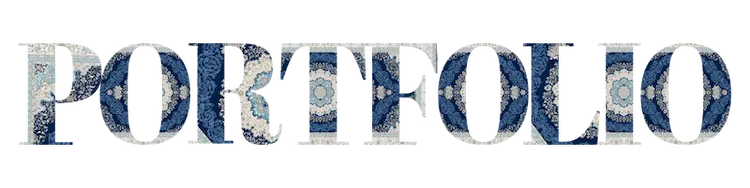
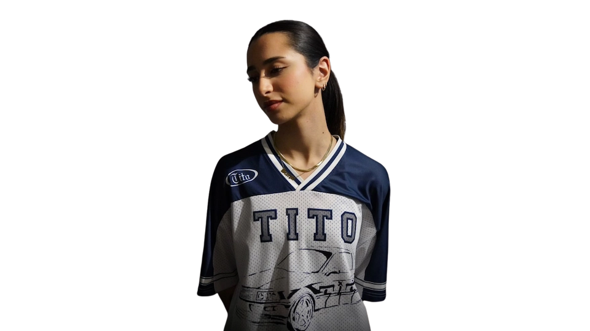

Multimediedesign Eksamen 2026
Af Selena Abjadpour
Hej! Jeg hedder Selena og dette er mit portfolio.
Som multimediedesignstuderende på 1. semester har jeg hurtigt lært, at design ikke kun handler om, hvordan tingene ser ud, men om hvordan de virker og kommunikerer.
Det har været en vild rejse, hvor 20% af tiden er brugt på undervisning, mens de resterende 80% er gået med at eksperimentere, fejle og mestre de mange forskellige værktøjskasser, en multimediedesigner skal have styr på.
Her på siden kan du dykke ned i min udvikling fra den første streg i Illustrator til færdige digitale løsninger.
Hvem er jeg uden for VS code?
 Om mig
Om mig
Se hvad jeg har overlevet på 1. semester.
Projekter